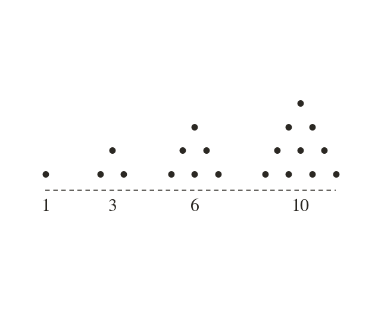
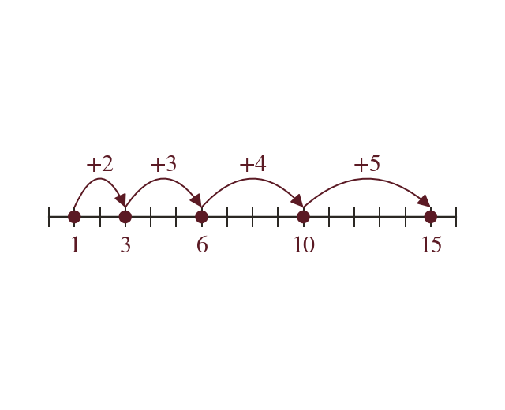
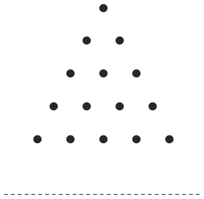
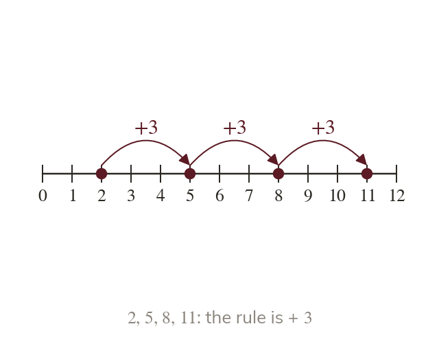
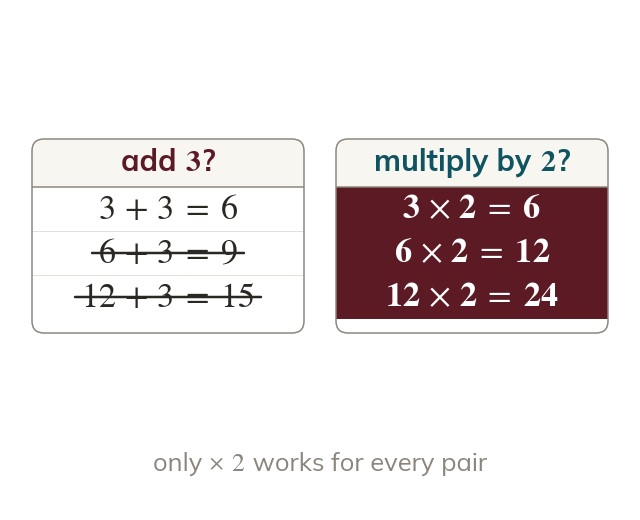

Dot patterns, tiles and staircases grow by rules, and once you spot the rule you can predict the next stage without drawing it. Today you'll meet the triangular numbers, then learn to follow and to find the rule behind a sequence.
By the end you’ll know…
A sequence is a list of numbers, called terms, that follows a rule, and each term has a position: 1st, 2nd, 3rd and so on.
A term-to-term rule says how to get from each term to the next, such as 'add 3' or 'multiply by 2', and it is applied to the term before, not to the position.
The triangular numbers ... count the dots in triangle patterns: each new triangle adds a row one dot longer than the last.
So each triangular number is a running total of the counting numbers and the gaps between them grow by one:
By the end you can
G2Generate the triangular numbers from dot patterns, continue the sequence, and recognise whether a number is triangular.
G2Generate terms of a sequence from a term-to-term rule, and find and describe the term-to-term rule of a sequence to continue it.
Work down the page at your own pace. Write every answer in your book first, then click to check it.
01
Do Now
About 5 minutes
1
Starting at count back in steps of and write the next four numbers.
2
How many more than is and how many times the size of is it?
more times the size.
3
List the first five multiples of
Remember these?
LAST LESSONWrite as a product of its prime factors in index form.
LAST WEEKIs divisible by ? Show how you know.
a multiple of so yes.
LAST TERMFind of
LAST YEARHow many grams are in kg?
g.
02
Learn
Read each card, then follow the worked examples one step at a time.

Triangular numbers
The triangular numbers count dots in triangles. Each new triangle adds a row one dot longer.
The triangular numbers, and so on, count the dots in triangle patterns. Each new triangle adds a row one dot longer than the row before.

Running totals
Running totals give them: The gaps grow by one each time.
Each triangular number is a running total of the counting numbers, so is the fourth one. The gaps between them grow by one each time.
WORKED EXAMPLE A
Find the next triangular number after is the 5th triangular number. Each new triangle adds a row one dot longer than the last, so the 6th adds a row of dots.

Add a row of
WORKED EXAMPLE B
Is a triangular number?
Add to the 6th
Add a row of
Is triangularyes, the 8th
YOUR TURN · a
The 9th triangular number is Find the 10th and the 11th. (Hint: the 10th triangle adds a row of dots.)
10th: 11th:
YOUR TURN · b
Is a triangular number? Explain how you know.
so falls between the 9th and the 10th triangular numbers, and : it is not triangular.
03
Check your understanding
Pick an answer. If it's wrong, the feedback tells you which mistake it was.
Which list shows the first five triangular numbers?
Not quite. Those are odd numbers. Triangular numbers add one more each time:
Yes. Add then then then :
Not quite. Those are square numbers. Triangular:
Not quite. Count every dot, not just the new row:
The 11th triangular number is What is the 12th?
Not quite. The gap grows by one each time: add not
Not quite. is the new row. Add it on:
Yes. The 12th triangle adds a row of :
Not quite. is a square number.
Which of these is a triangular number?
Not quite. is a square number The triangular numbers go
Not quite. The gaps grow: after add to get is skipped.
Not quite. is a square number. Triangular:
Yes.: yes.
04
Practise
mark as you go
Checkpoint. Write down the first seven triangular numbers. Then decide whether is a triangular number, and explain how you know. Show your working - I'll check it before you move on.Show your teacher before you go on
Given that the 13th triangular number is find the 14th.
3
Continue … for two more terms.
4
Is a triangular number?
No: it lies between and
5
Which are triangular: ?
and
EXT
Given that the 20th triangular number is find the 19th and the 21st.
05
Learn
Read each card, then follow the worked examples one step at a time.

Term-to-term rules
A term-to-term rule gets from each term to the next. It works on the term before, never the position.
A term-to-term rule tells you how to get from each term of a sequence to the next. It always works on the term before, never on the term's position.

Finding the rule
The same change must work for every pair of neighbours. It can add, subtract, multiply or divide.
A rule is only found once the same change works for every pair of neighbouring terms, not just the first pair. The change can be adding, subtracting, multiplying or dividing.
WORKED EXAMPLE C
Starting at with the rule 'subtract 7', find the next three terms.
Subtract
Subtract
Subtract
Next three terms
WORKED EXAMPLE D
Find the rule and the next term of …
Test add not
Test multiply by
Rulemultiply by
Next term
YOUR TURN · c
A sequence starts at and its rule is 'add 6'. Write the first five terms.
YOUR TURN · d
Find the rule and the next two terms of …
Each term is half the one before, so the rule is 'divide by 2'. Next two terms:
06
Check your understanding
Pick an answer. If it's wrong, the feedback tells you which mistake it was.
What does a term-to-term rule tell you?
Not quite. That's a position-to-term rule. Term-to-term goes from one term to the next.
Not quite. Check every gap, not just the first.
Yes. It tells you how to get the next term from the one before.
Not quite. Not every rule adds the same amount. It could multiply.
A sequence starts at and its rule is 'multiply by 5'. What is the 3rd term?
Yes. then then
Not quite. Multiply the previous term, not the position:
Not quite. is the 2nd term. One more × :
Not quite. Multiply by don't add :
What is the next term of …?
Not quite. Check every gap: doubles each time.
Yes. Each term doubles:
Not quite. The gaps double too.
Not quite. is the position. The value is
07
Practise
mark as you go
Checkpoint. A sequence starts at and its rule is 'add 5'. Write its first five terms. Then find the rule of … and use it to find the next two terms. Show your working - I'll check it before you move on.Show your teacher before you go on
1
The first term is and the rule is 'add 4'. Write the first five terms.
2
The first term is and the rule is 'subtract 8'. Write the first four terms.
3
The first term is and the rule is 'multiply by 4'. Write the first four terms.
4
Find the rule and the next two terms of …
Rule: divide by
5
Find the rule and the next term of …
Rule: multiply by not add
6
Find the missing terms in ?, ?,
Rule: add
EXT
The first term is and the rule is 'multiply by then subtract 1'. Find the next three terms.
08
Exit ticket
On paper, on your own, then check
1
Explain how each triangular number is made from the one before, and say what a term-to-term rule is.
Each new dot triangle adds a row one dot longer than the last, so the gaps go and so on. A term-to-term rule tells you how to get from each term to the next.
2
Given that the 24th triangular number is find the 25th and the 26th.
3
Find the term-to-term rule of … and the next two terms.
Each term is less than the one before, so the rule is 'subtract 9'
Finished? Next lesson: 7.2.1 Introducing Sets.
Practise more
After the lesson, or whenever you want more
Dr Frost
Log in, then search for a code to practise that skill.
202aIdentify named sequences such as square numbers, cube numbers, triangular numbers and the Fibonacci sequence.
203eGenerate an arithmetic sequence given the first term and the common difference.